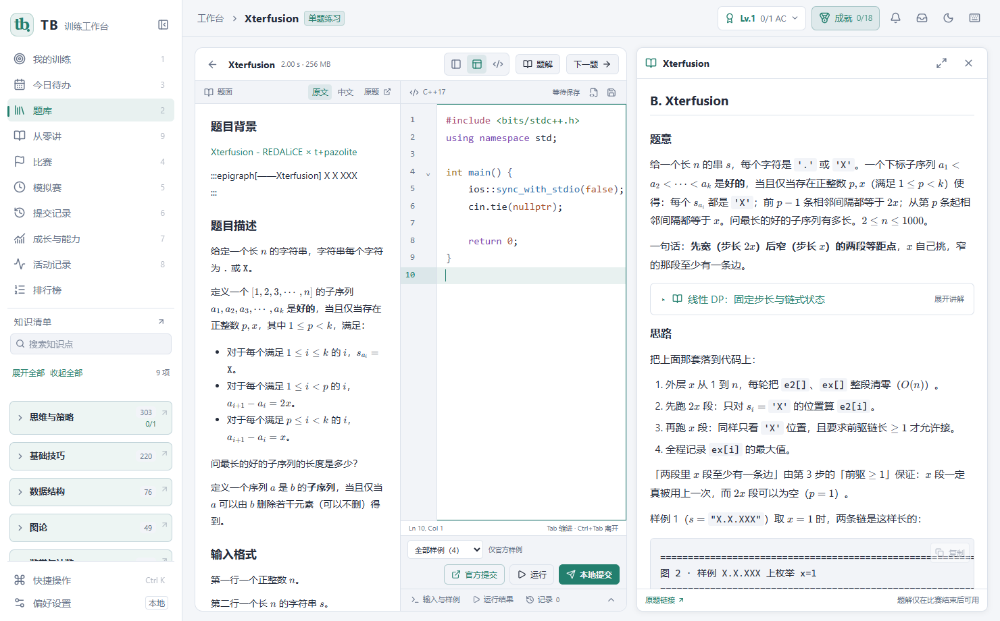

内容随软件提供
内置 607 道题、607 份题解和 378 篇基础讲解，SQLite 存储。基础讲解只关联本题章节与明确引用。
把题库、题解、C++ 编辑、本地评测和训练记录放在一起。支持牛客、Codeforces、AtCoder 和洛谷。

内置 607 道题、607 份题解和 378 篇基础讲解，SQLite 存储。基础讲解只关联本题章节与明确引用。
自动保存草稿与提交。样例通过、本地评测和官方结果分别记录；通过记录形成每日任务、知识覆盖与复习待办。
单题练习、专项与综合模拟赛。比赛期间隐藏知识点与题解，结束后结合记录复盘。